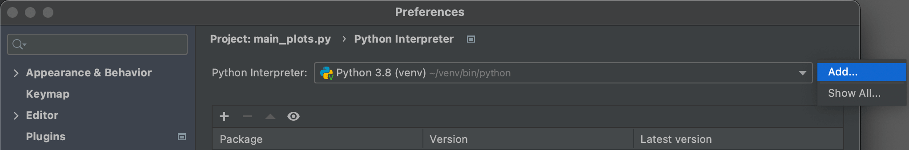
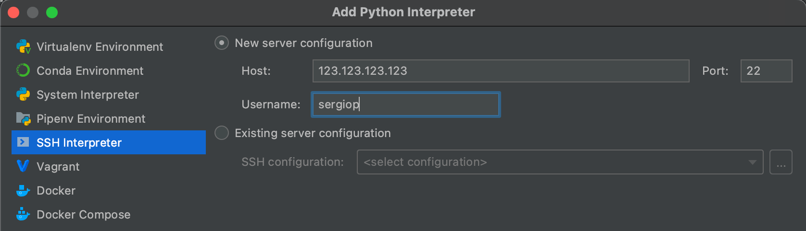
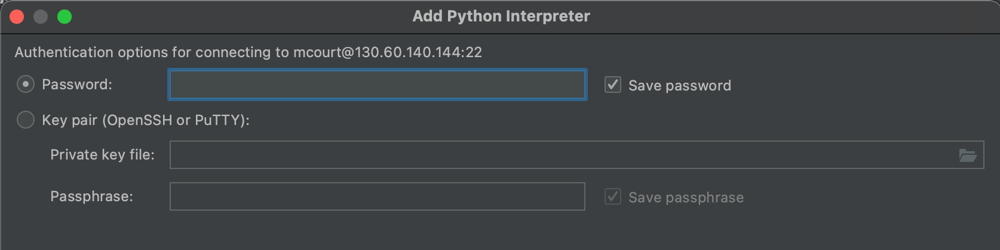
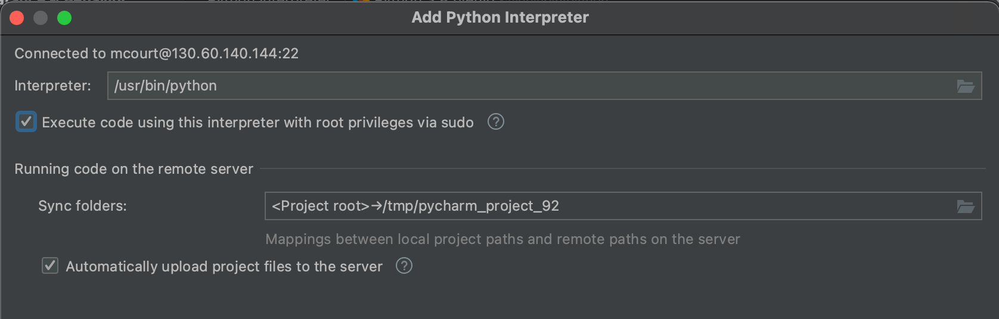
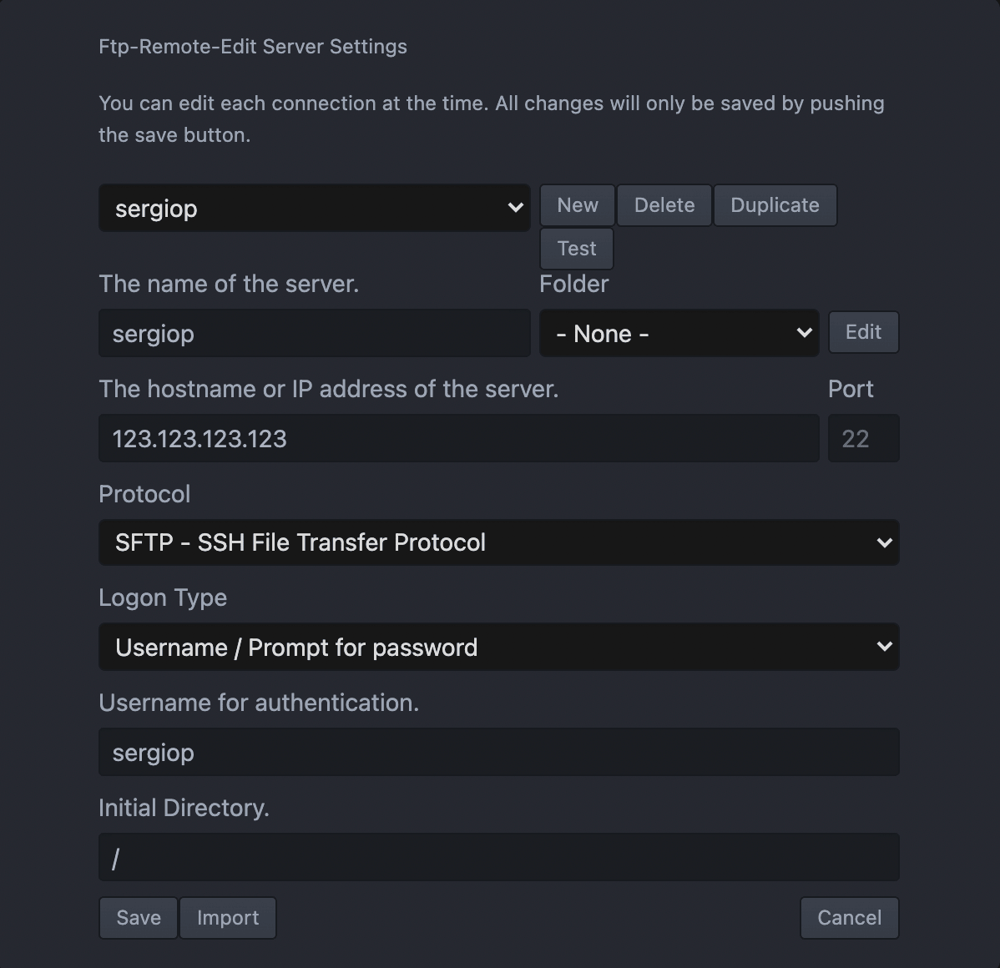
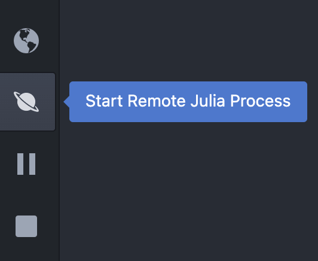

How to Work on a Remote Machine

In this page I will share tips on how to set up a remote machine and deploy your code there. I will first analyze SSH and then look at two specific applications: coding in Python and Julia.
Setup
In order to start working on a remote server you need
- the server
- local shell
- SSH installed
SSH, or Secure Shell, is a protocol designed to transfer data between a client and a server (two computers basically) over an untrusted network.
The way SSH works is it encrypts the connection using a pair of keys and the server, which is the computer you would connect to, is usually waiting for an SSH connection on Port 22.
SSH is normally installed by default. To check if you have SSH installed, open the terminal and write ssh. You should receive a message that looks like this
usage: ssh [-1246AaCfGgKkMNnqsTtVvXxYy] [-b bind_address] [-c cipher_spec]
[-D [bind_address:]port] [-E log_file] [-e escape_char]
[-F configfile] [-I pkcs11] [-i identity_file]
[-J [user@]host[:port]] [-L address] [-l login_name] [-m mac_spec] [-O ctl_cmd] [-o option] [-p port] [-Q query_option] [-R address] [-S ctl_path] [-W host:port] [-w local_tun[:remote_tun]]
[user@]hostname [command]
If SSH is not installed, you can install it using the following commands.
sudo apt-get install openssh-server
sudo systemctl enable ssh
sudo systemctl start ssh
Now that you have installed SSH, we are ready to setup a remote connection.
From the computer you want to access remotey, generate the public key.
ssh-keygen -t rsa
You will be asked for a location. If you decide to enter one manually then that will be the pair’s location, if you leave the default one it will be inside the .ssh hidden folder in your home directory.
Now you will be prompted for a password. If you enter one you will be asked for it every time you use the key, this works for added security. If you don’t want a password just press enter and continue without one.
Two files were created. One file ends with the ‘.pub’ extension and the other one doesn’t. The file that ends with ‘.pub’ is your public key. This key needs to be in the computer you want to connect to (the server) inside a file called authorized_keys . You can accomplish this with the following command:
ssh-copy-id username@ip
For example in my case to send the key to my computer it would be:
ssh-copy-id sergiop@132.132.132.132
If you have MacOS there’s a chance you don’t have ssh-copy-id installed, in that case you can install it using
brew install ssh-copy-id
If you haven’t installed brew, you can install it by following this guide.
Connect
To permanently add the SSH key, you can use the follwing command
ssh-add directory\key.pem
Lastly, to connect, just type the following command.
ssh username@ip
Where username is the server name and ip is the public IP adress, e.g. 132.132.132.132.
If your server is not public, you will not be able to access it.
If your server is password protected, you will be prompted to insert a password when you connect. If not, you should protect it with a password.
Managing screens
While you are connected to the remote terminal, any disturbance to your connection will interrupt the code. In order to avoid that, you want to create separate screens. This will allow your code to run remotely undisturbed, irrespectively of your connection.
First, you need to install screen.
brew install screen
To create a new screen, just type
screen
Now you can lunch your code.
After that, you want to detach from that screen so that the code can run remotely undisturbed.
screen -d
Another option is to use ctrl+a followed by ctrl+d. This will detach the screen without the need to type anythin in the terminal, in case the terminal is busy (most likely).
To list the current active screens type
screen -ls
If you want to check at any time that your code is running, without re-attaching to the screen, you can just type
top
which is the general command to check active processes. To exit, use ctrl+z, which generally terminates processes in the terminal.
To reattach to your screen, type
screen -r
In case you have multiple screens (you can check with screen -ls), you can reattach to a specific one by typing
screen -r 12345
where 12345 is the id of the screen.
To kill a screen, type
screen -XS 12345 quit
where again 12345 is the id of the screen.
Python and Pycharm
If you are coding in Python, PyCharm is one of the best IDEs. Among many features, it offers the possibility to set a remote compiler for your pthon console and to sync input and output files automatically.
First, you need to have setup a remote SSH connection following the steps above. Importantly, you need to have added the public key to your machine using the ssh-add command, as explained above.
Then open Pytharm, go to the lower-right corner, where the current interpreter is listed (e.g. Pytohn 3.8), click it and select interpreter settings.
Click on the gear icon ⚙️ on the top-right corner and select add.

Insert the server host (IP address, e.g. 132.132.132.132) and username (e.g. sergiop).

Next, you have to insert your credentials. If you have a password, insert it, otherwise you have to insert the path to your SSH key file.

Lastly, select the remote interpreter. If you are using a python version that is not default, browse to the preferred python installation folder. Also, check the box for execute code giving this interpreter with root privileges via sudo.
You can also select which remote folder to sync with your local project. By default, you are given a tmp/pycharm_project_XX folder. You can change it if you want. I recommend also to have the last option checked: automatically sync project files to the server. This will automatically synch all remote changes with your local machine, in your local project folder.

Julia and Juno
If you are coding in Julia, Juno is the best IDE around. It’s an integration with Atom with a dedicated compiler, local variables, syntax highlight, autocompletion.
On Atom, you first need to install the ftp-remote-edit package.
Then go to the menu item Packages > Ftp-Remote-Edit > Toggle.
A new Remote panel will open with the default button to Edit a new server.
Click it and you will be able to set up your remote connection.
- Press
New - Insert your username in
The name of the server, for examplesergiop - Insert your ip adress in
The hostname or IP adress of the server, for example123.123.123.123 - Select
SFTP - SSH File Transfer ProtocolunderProtocol - Select your
Logonoption. You can either insert your password every time, just once, or use a keyfile. - Insert again your username in
Username for autentication, again for examplesergiop - If you don’t want to start from the root folder, you can change the
Initial Directory

Now you will be able to see your remote directory (named for example sergiop) in the Remote panel.
To start using Julia remotely, just start a new remote Julia process from the menu on the left.
Now you are ready to deploy your Julia code on your remote server!
Jupyter Notebooks
If you want to have a Jupyter Notebook running remotely, the steps are the following. The main advantage of a Jupyter Notebook is that it allows you to mix text and code in a single file, similarly to RMarkdown, with the advantage of not being contrained to use a R (or Python) kernel. For example, I often use Jupyter Notebook with Julia or Matlab Kernels. Moreover, you can also make nice slides out of it!
First, connect to the remote machine. Look at section 1 to set up your SSH connection.
ssh username@ip
Start a Jupyter Notebook in the remote machine.
jupyter notebook --no-browser
The command will open a jupyter notebook in the remote machine. To connect to it, we need to know which port it used. The default port is 8888. If that port is busy, it will look for another available one. We can see the port from the output in terminal.
Jupyter Notebook is running at: http://localhost:XXXX/…
Where XXXX is the repote port used.
Now we need to forward the remote port XXXX to our local YYYY port.
Open a new local shell. Type
ssh -L localhost:YYYY:localhost:XXXX username@ip
Where YYYY can be anything. I’d use the default port 8888.
ssh -L localhost:8889:localhost:8888 username@ip
Now go to your browser and type
localhost:YYYY
Which in my case is
localhost:8889
This will open the remote Jupyter Notebook.
Done!
In case you want to check which Jupiter notebooks are running, type
jupyter notebook list
To kill a notebook use
jupyter notebook stop XXXX